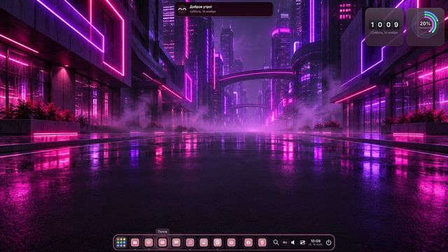
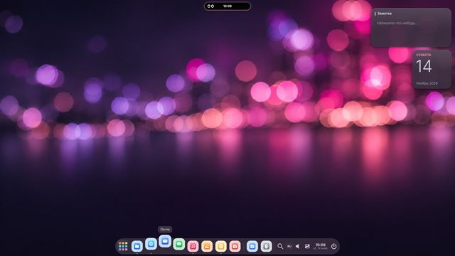
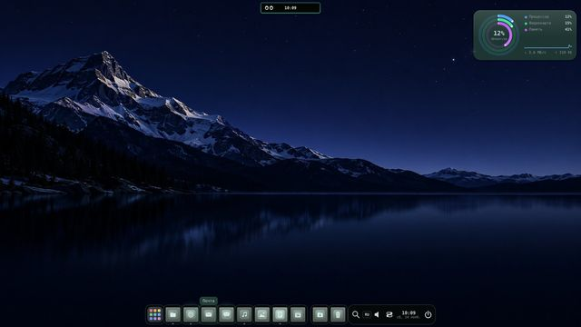
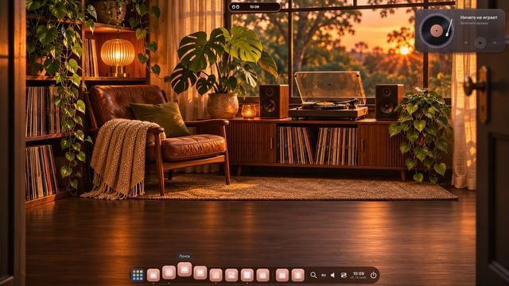
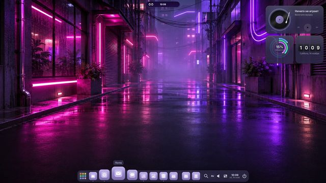
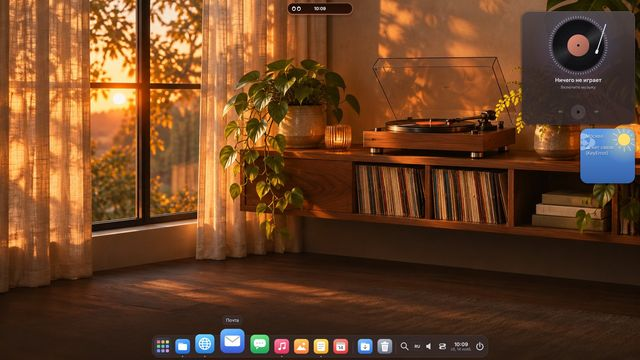
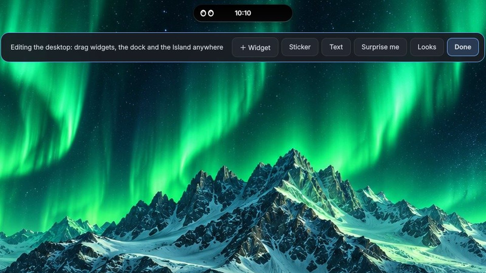
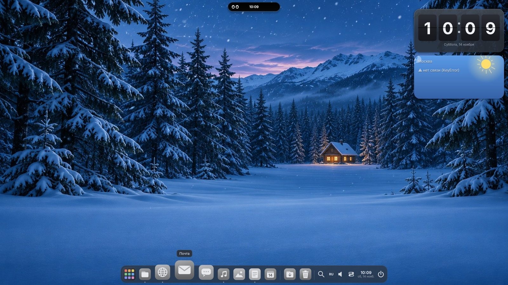

Deixe o Windows do seu jeito
O Dock transforma uma área de trabalho comum em algo bonito e prático: dock em qualquer borda da tela, uma Ilha viva no topo, papéis de parede animados, widgets e visuais prontos — tudo num clique.
⬇ Baixar grátis


Visuais de designer
Papel de parede, cor, forma do dock, ícones, a Ilha e os widgets mudam juntos. Não gostou? “Surpreenda-me” monta um visual aleatório.











Onde quiser, do jeito que quiser

Dock em qualquer borda
Embaixo, em cima, à esquerda ou à direita — segure Alt e arraste. Precisa de mais? Ligue um segundo dock para jogos ou trabalho.

Editar área de trabalho
Mova widgets, o dock e a Ilha com o mouse, adicione adesivos, GIFs e textos em qualquer fonte.

A Ilha no topo
Uma pílula viva: música com capa e letra, notificações, lembretes, temporizador e arquivos do celular pelo Wi-Fi.

34 widgets
Relógio, clima, vinil, calendário, calculadora, lua, hora mundial. Qualquer tamanho, vidro fosco, conjuntos prontos.

Papéis de parede animados
Vídeo, GIF e cenas vivas. O fundo acompanha o mouse, brilha com a música — e se nevar lá fora, neva na sua tela também.

Você não se perde
“O que o Dock faz” mostra cada recurso com um botão “Mostrar”, e uma dica diária sugere algo novo.
Visuais da comunidade
Áreas de trabalho criadas por usuários do Dock. Copie um código e cole no Dock: Visuais → “Colar código…”.
Perguntas frequentes
É grátis?
Sim. Tudo o que está nesta página é grátis.
É seguro?
O Dock não rastreia você e não tem anúncios. Cada atualização é assinada: o Dock não instala um arquivo se a assinatura não bater.
Vai deixar o PC lento?
Não: o Dock usa cerca de 150 MB de memória e menos de 1% da CPU, e os fundos animados pausam quando não aparecem ou durante jogos.
E a barra de tarefas do Windows?
Você escolhe na primeira execução: manter, ocultar automaticamente ou remover de vez.
Como volto ao normal?
Desinstale o Dock em Configurações → Aplicativos. A barra de tarefas, o fundo e os ícones voltam.
Onde tiro dúvidas?
Escreva ao nosso bot do Telegram — o autor responde. Ou no Dock: “Relatar um problema”.